Detecção de uso automatizado em logs de auditoria
Perfis estatísticos de uso por usuário e por mês, sobre uma base que eu mesmo levei do Azure Data Explorer para um MySQL tunado.
1 bi+registros de auditoria processados e analisados, de 2023 a 2026

PhD em Ciência e Tecnologia
Senior Data ScientistLLMAIMachine LearningGeoprocessingGeospatial AnalyticsR&DClimate ChangeMiningTransport Infrastructure
Desenvolvo métodos e soluções sob medida para problemas de dados complexos, quando errar custa caro.
Meu trabalho começa onde a abordagem convencional deixa de funcionar.
Busco: posição de Cientista de Dados Sênior em tempo integral. Belo Horizonte ou remoto.
Empresas
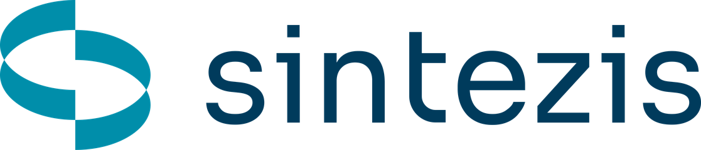
Municípios atendidos
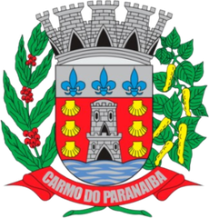
Carmo do Paranaíba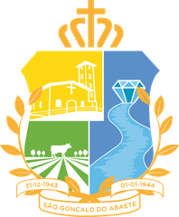
São Gonçalo do Abaeté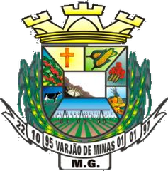
Varjão de Minas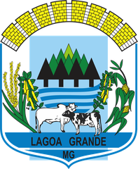
Lagoa GrandeNa PRF/DTIC, desde janeiro de 2025, processei e analisei mais de 1 bilhão de registros de auditoria, mantenho em produção a APIGEO, que serve os 13.758 pontos do Projeto Mapear, e audito um lakehouse Databricks com tabelas de até 2 bilhões de linhas, incluindo os assistentes de linguagem natural para SQL.
No Governo de Minas, atuei na equipe técnica do PELT-MG, o plano de transportes que analisou uma carteira de mais de R$ 1 trilhão até 2055. No DNIT, automatizei os 27 Mapas Multimodais oficiais e consolidei a malha de 256 mil km da CIDE. Muitas dessas frentes correram em paralelo.
Construo e avalio agentes de IA: agentes com ferramentas e RAG, guardrails, isolamento de dados, LLM-as-judge e orquestração de agentes de código. Trabalho com machine learning desde 2015, sou doutor pela UFU e o método da minha tese foi depositado como pedido de patente.
Pedido de patente BR 10 2025 019783 9 (INPI, titular UFU): previsão de produtividade agrícola com variáveis climáticas de satélite. Ver o pedido
Os projetos de maior escala e impacto, para PRF, Governo de Minas, DNIT e UFU. Cada estudo de caso mostra o problema, os dados, a abordagem e o resultado.
Perfis estatísticos de uso por usuário e por mês, sobre uma base que eu mesmo levei do Azure Data Explorer para um MySQL tunado.
1 bi+registros de auditoria processados e analisados, de 2023 a 2026
Machine learning que prevê a produção de soja só com clima de satélite, sem estação meteorológica. A UFU depositou o método como pedido de patente.
Pedido de patenteBR 10 2025 019783 9 (INPI, titular UFU), com o método da tese
A API que localiza cada ponto do Projeto Mapear na malha oficial: rodovia, km, município e unidade da PRF, com bases que se atualizam sozinhas.
13.758pontos do Projeto Mapear (11ª edição, 2025/2026) servidos pela APIGEO
O plano que ordena os investimentos em transporte de Minas Gerais em seis modos, de 2023 a 2055. Atuei na equipe técnica da CODEMGE.
R$ 1 tri+em carteira de investimentos analisada, com 1.677 empreendimentos e 7.683 obras
Auditoria técnica de um lakehouse em camadas, revisão de regras de qualidade e aceite de assistentes em linguagem natural.
~2 bide linhas nas maiores tabelas que audito
Transformei a produção dos mapas oficiais de transporte do Brasil num atlas dirigido pelo banco de dados.
27 mapasoficiais em A0, das UFs e do Brasil, gerados automaticamente a partir do banco
Assistente que responde sobre a disciplina com citação de fonte e consulta autenticada de nota e frequência.
Pilotona Unimontes, com alunos usando pelo WhatsApp
Produto para cooperativas agrícolas que estima a produtividade de talhões e fazendas com dados de satélite e clima, com um agente de IA integrado: o produtor consulta a produtividade dos talhões e da fazenda, planeja a safra e aciona profissionais cadastrados pela cooperativa, como agrônomos e veterinários. Ligado ao método do pedido de patente.
Produto em desenvolvimento
Segmentação de instâncias de telhados para transformar um aerolevantamento municipal em inventário urbano.
Inventáriode telhados e área em projeção por lote, gerados automaticamente
Hipótese vinda do sensoriamento remoto: dividir o KV cache em bandas e deixar a consulta escolher quais manter.
7 de 7níveis de compressão em que o seletor guiado venceu o estático no Qwen2.5-7B (perplexidade)
DATASUS, saneamento, barragens, cartografia e os demais projetos estão no histórico profissional.
Construo, avalio e orquestro agentes de IA em produção e em piloto, com a segurança no desenho do sistema e não só no prompt.
Agentes que consultam dados por ferramentas com contrato fechado e respondem com RAG citando fonte, capítulo e página. O Bandit atende alunos pelo WhatsApp em piloto na Unimontes.
Isolamento multiusuário com Row-Level Security, dado sensível fora do prompt, filtro de saída e defesa contra prompt injection.
Assistentes de linguagem natural para SQL sobre Metric Views no Databricks, validados com gabarito em SQL e rodadas de regressão.
Gabaritos, testes ponta a ponta com o modelo real, testes de mutação, LLM-as-judge com rubrica e regras aprendidas, e comparação de modelos de embeddings.
Análise de editais com contexto longo, cache de prefixo, modelo reserva com troca automática e cota de uso por organização.
Claude Code e Codex trabalhando em paralelo com contratos AGENTS.md, skills próprias e sessões autônomas que constroem, testam e documentam.
Linguagens, ferramentas e técnicas que uso, em blocos por área.
Cargo, período e até três realizações em destaque por experiência. O restante, e os projetos de cada fase, abrem aqui mesmo.
jan/2025 - atual
Brasília, DF
Polícia Rodoviária Federal - PRF (Logiks TI)
Torres de Ciência de Dados, Inteligência Artificial e Integrações | Python, Java, JavaScript, SQL, IA, ciências preditivas
Como prestador de serviço técnico especializado à PRF/DTIC, trabalho nas torres de Ciência de Dados, IA e Integrações: análise estatística em escala sobre logs de auditoria, auditoria de um lakehouse Databricks, preparação de corpus para RAG e serviços em produção. Por se tratar de um órgão de segurança pública, dados, telas e nomes de sistemas não aparecem aqui.
13.758pontos do Projeto Mapear (11ª edição, 2025/2026) servidos pela APIGEO
~2 bide linhas nas maiores tabelas que audito
1 bi+registros de auditoria processados e analisados, de 2023 a 2026
Acidente mostra onde o risco já se materializou. Excesso de velocidade mostra onde ele está latente. Separados, cada um desenha um mapa diferente. O laboratório usa só dados abertos e responde a uma pergunta: em que trechos de rodovia os dois riscos coincidem?
O assistente consulta normas de gestão de pessoas com arquitetura RAG, sobre uma plataforma de IA generativa on-premises. O acervo veio em PDF, DOCX, planilhas e imagens, com texto corrompido na extração. Num RAG jurídico, texto quebrado e norma revogada viram resposta errada. Minha parte foi o corpus, não a aplicação.
A PRF expõe serviços por um gateway de APIs com ambientes de desenvolvimento, homologação e produção. Cada nova API chega com um backend próprio, às vezes com autenticação particular e mais parâmetros do que o consumidor precisa. Publicar sem análise pode expor dado pessoal.
Nasceu da APIGEO: era preciso mostrar que a API respondia certo e aguentava carga. Teste de carga sozinho mede a velocidade de uma resposta que pode estar errada; validação sem carga não vê esgotamento de conexões; e nenhum dos dois diz se a vazão é folga ou teto sem os parâmetros do banco.
2025 - 2026
Belo Horizonte, MG
CODEMGE - Companhia de Desenvolvimento de Minas Gerais (Governo do Estado de MG)
Plano Estadual de Logística e Transportes de Minas Gerais (PELT-MG) | Python, SQL, logística, geoprocessamento, ciências preditivas
O PELT-MG é o plano que orienta onde Minas Gerais investe em rodovias, ferrovias, aeroportos, dutos e hidrovias até 2055. Eu era o cientista de dados que cuidava do banco PostgreSQL/PostGIS do plano: vetorizava a carteira de empreendimentos, fazia as análises espaciais, ingeria e mantinha tudo atualizado. Também redigi a proposta do capítulo de carga aérea, montei as tabelas de ligação entre aeroportos e municípios e consolidei a série histórica de passageiros da EFVM. A simulação da rede, as matrizes de demanda e os mapas de calor são do plano que eu ajudei a construir, feitos por colegas da equipe.
R$ 1 tri+em carteira de investimentos analisada, com 1.677 empreendimentos e 7.683 obras
O plano compara obras muito diferentes entre si, e para isso cada empreendimento precisa de geometria, atributos e vínculo com o território num lugar só. O banco já existia quando cheguei, em 2025. Passei a cuidar dele: o que entra, como entra e se o que sai está certo.

A equipe do plano alocou a demanda de cargas e de pessoas na rede multimodal do Brasil no PTV Visum, a partir do cenário-base 2023. Com a carteira de cada cenário inserida na rede, os fluxos foram realocados para 2055: um contrafactual e os cenários 1 a 4. A simulação é do plano, não minha.


O plano adapta o Five Case Model do Tesouro britânico. O índice de classificação combina as cinco dimensões por regressão linear múltipla, e a dimensão socioeconômica usa indicadores de impacto medidos pela diferença entre cada cenário e o contrafactual. O método e o ranking são do plano; o resultado publicado na consulta é preliminar.


A matriz de cargas do plano vem do Big Data de notas fiscais eletrônicas, com 49 macroprodutos e 5.589 zonas de tráfego. A de pessoas vem de sinais de telefonia móvel. A construção e a expansão das matrizes são da equipe do plano, e parte delas é anterior à minha chegada.
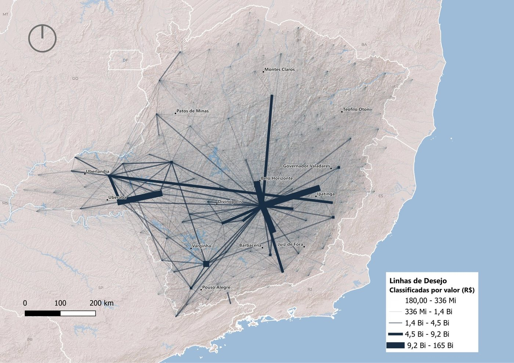
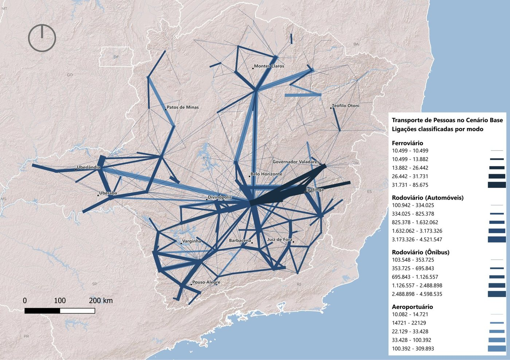

O plano cruza o que os workshops regionais apontaram como estratégico com os macroprodutos das matrizes de demanda. As rotas desses fluxos na rede formam os corredores estratégicos de cargas, e o relatório traz 35 figuras de corredores por macroproduto. O traçado dos corredores é do plano.


Estudo da equipe do plano, com seção própria no relatório. Não é autoria minha.
Estudo da equipe do plano: Minas tem 67 aeródromos públicos, e a classificação seguiu o método do Plano Aeroviário Nacional. A classificação é da equipe; a parte de carga aérea passou por mim.
2022 - 2025
Brasília, DF
Departamento Nacional de Infraestrutura de Transportes - DNIT (STE-SIMEMP)
Coordenação de Levantamentos para Planejamento (COLEP) do Departamento Nacional de Infraestrutura de Transportes
Por quase três anos cuidei da base geoespacial que sustenta o planejamento federal de transportes: o Sistema Nacional de Viação (SNV), os Mapas Multimodais e a malha usada na modelagem de tráfego do PNCT. Boa parte do que fiz está registrada em notas técnicas assinadas por mim.
27 mapasoficiais em A0, das UFs e do Brasil, gerados automaticamente a partir do banco
A extensão da malha pavimentada de cada estado é um dos critérios de rateio da CIDE-Combustíveis (Lei 10.336/2001). Todo ano a COLEP recebe a planilha e, quando existe, a base vetorial de cada UF, confere com o SNV federal segundo a Portaria MT 197/2006 e apura os quilômetros que seguem para o TCU.


O PNCT estima o volume médio diário anual (VMDa) por modelagem, e o modelo precisa da capacidade de cada trecho: pista simples ou dupla, quantas faixas, com ou sem acostamento. A base vetorial do DNIT não tinha esse atributo para a malha inteira.
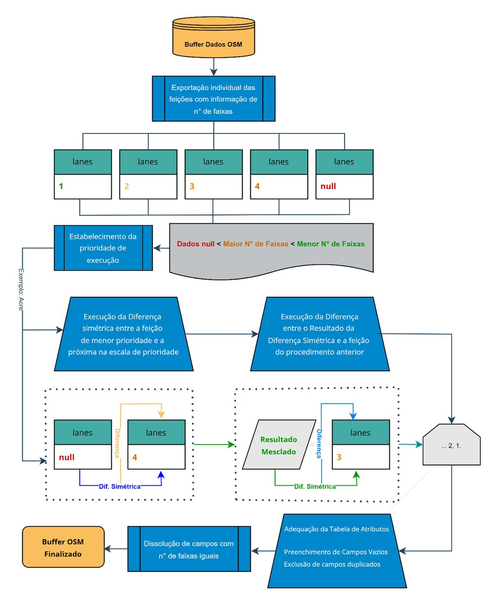


A base de hidrovias de 2024 chegou pré-processada, com trechos principais e acessórios. Para virar rota do SNV precisava estar sem nós soltos, duplicidades nem geometrias multipartes, e com sentido único da foz para montante.
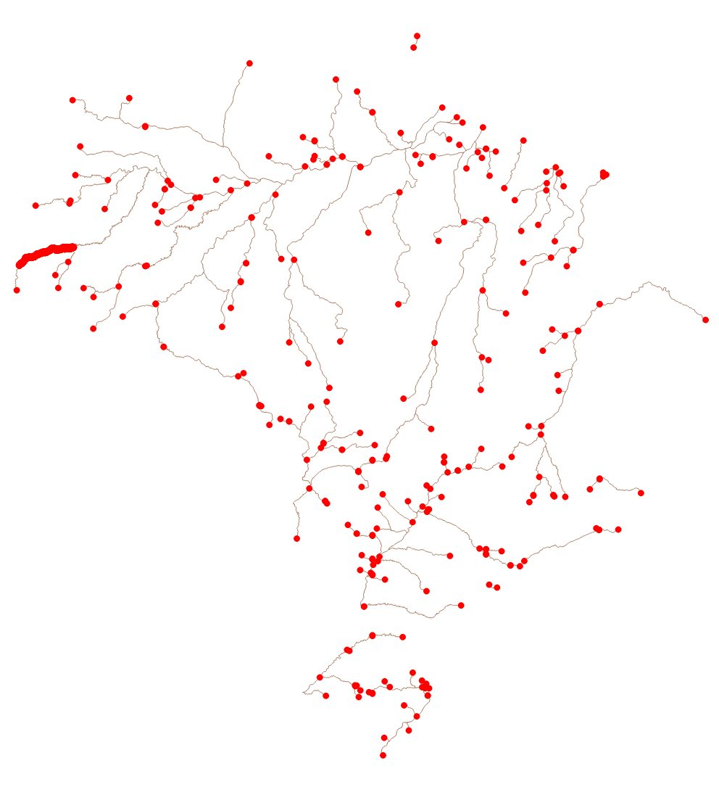


Os produtos da COLEP misturam a malha do SNV com camadas de outros órgãos: limites, hidrografia, terras indígenas, quilombolas, unidades de conservação, portos. Sem controle de origem e de versão, um mapa pode sair com dado vencido ou na escala errada.

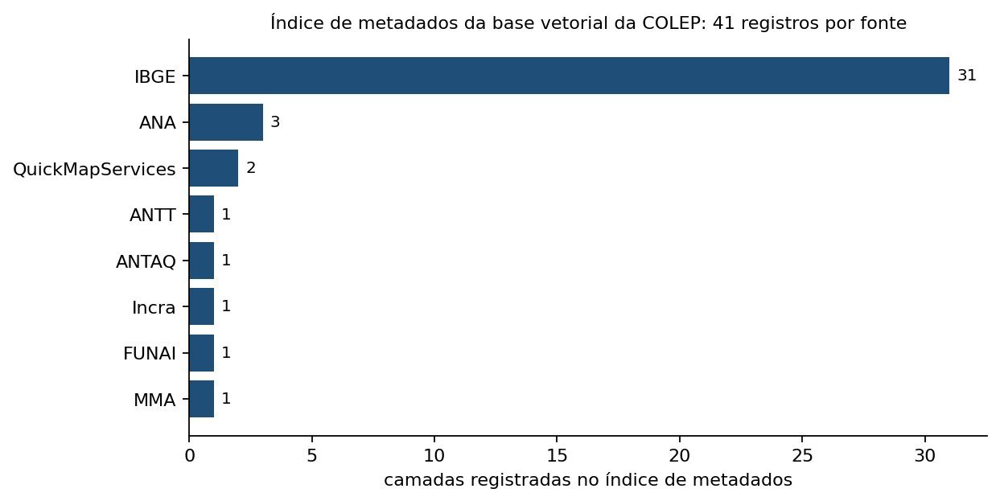
O PNCT conta tráfego em postos fixos e estima o VMDa no resto da malha por alocação de fluxo. O modelo depende de uma rede com topologia, conectores e atributos de capacidade. Trabalhei nas modelagens do plano preparando essa malha e a base de modelagem.


Projetos de lei que dão nome a trechos de BR, pontes e viadutos chegam ao DNIT para parecer. A COLEP verifica se o trecho existe, se já tem nome por lei e se há conflito, o que exige uma base atualizada de denominações e de tramitação.
O SNV muda várias vezes por ano. Quando um trecho estadual é federalizado, ou um trecho federal passa a um estado, o planejamento precisa saber o que mudou, desde quando e em que km. A resposta técnica sai da série histórica do SNV.

O LVC é o levantamento visual do estado da superfície das rodovias federais, insumo do Índice de Condição de Superfície (ICS). Os dados chegavam como pontos com data, hora, metragem e sentido. A coordenação precisava ver por onde cada equipe passou e medir o rendimento do ciclo.

Cada demanda da coordenação começava do mesmo jeito: achar a versão certa do SNV, cruzar com outra base e preencher atributos à mão. Fui tirando esses passos do trabalho manual, um por um.


A COLEP contrata levantamentos de campo em lotes: classificação iRAP por estrelas, inspeção de obras de arte especiais, deflexão com TSD e contagem de tráfego. A gestão precisava ver, num mapa só, onde cada frente atua e o que já foi levantado.

2015 - atual
Patos de Minas, MG
GFX GEO Soluções em Engenharia e Geociências
Pesquisa e desenvolvimento em geociências e ciência de dados; prestação de serviço especializado
Fundei a GFX GEO em 2015. Ela começou em engenharia e geociências para municípios e mineração (hidrometria, disponibilidade hídrica, background geoquímico) e hoje é onde transformo método em produto: modelos preditivos, visão computacional e agentes de IA.
Pilotona Unimontes, com alunos usando pelo WhatsApp
Inventáriode telhados e área em projeção por lote, gerados automaticamente
Lagoa Grande (MG), na bacia do São Francisco, cresceu em volta de uma lagoa de cerca de 20 ha e tem histórico de alagamentos. A prefeitura contratou a GFX GEO para entender por onde a água corre, onde acumula e o que priorizar. A área levantada por drone tem cerca de 540 ha.
Municípios pequenos do Alto Paranaíba não têm estação fluviométrica nas bacias que abastecem a cidade. Sem medição local, a vazão mínima precisa ser estimada a partir de estações maiores. Fiz esse estudo para os PMSB de cinco municípios, como integrante da coordenadoria técnica e responsável pelos estudos de disponibilidade hídrica para captação urbana.
A lei obriga todo município a ter um PMSB, cobrindo água, esgoto, resíduos e drenagem, com horizonte de 20 anos. Atuei nos planos de Carmo do Paranaíba, Cruzeiro da Fortaleza, Guimarânia, Lagoa Formosa, Presidente Olegário, São Gonçalo do Abaeté e Varjão de Minas. Os de Carmo do Paranaíba, Cruzeiro da Fortaleza, Lagoa Formosa, São Gonçalo do Abaeté e Varjão de Minas foram contratados pelo Consórcio CISPAR (Alto Paranaíba), em convênio com a FEPAM/UNIPAM, e somavam cerca de 67 mil habitantes em 2016.


Quem vende para o governo precisa achar o edital certo antes do prazo, e eles estão espalhados entre o PNCP, o Sistema S, o BNDES, portais estaduais e bancos multilaterais. Desenhei e desenvolvi a plataforma inteira: coleta, banco, busca, API, frontend e segurança.
Mapas antigos podem virar arte, mas o caminho usual é manual em GIS, peça por peça. Montei um pipeline em que o georreferenciamento é automático e a estética é calibrada por medição, sem ajuste no olho. A peça mostrada aqui é a carta do Crater Lake (USGS, 1956), em domínio público.


Carmo do Paranaíba tinha cerca de 31 mil habitantes em 2016 e é abastecida por três captações superficiais e poços. O plano precisava dizer se esses mananciais sustentam a cidade pelos próximos 20 anos.
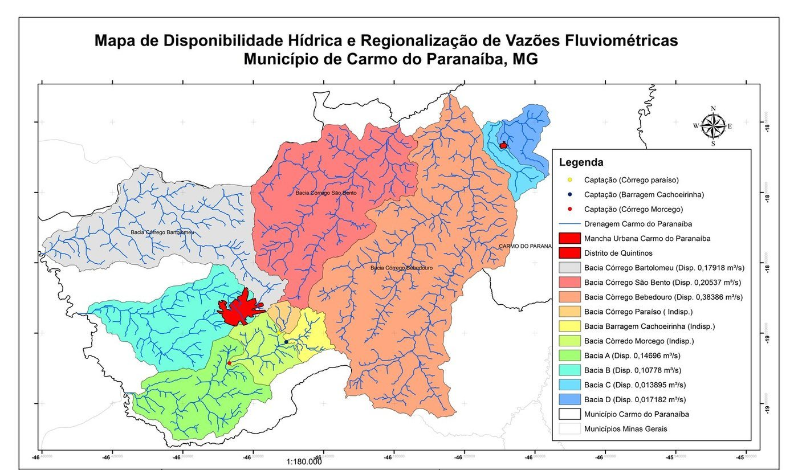
Lagoa Formosa tinha cerca de 18 mil habitantes em 2016. A cidade capta em um córrego apoiado por uma represa, já no limite da vazão outorgada.
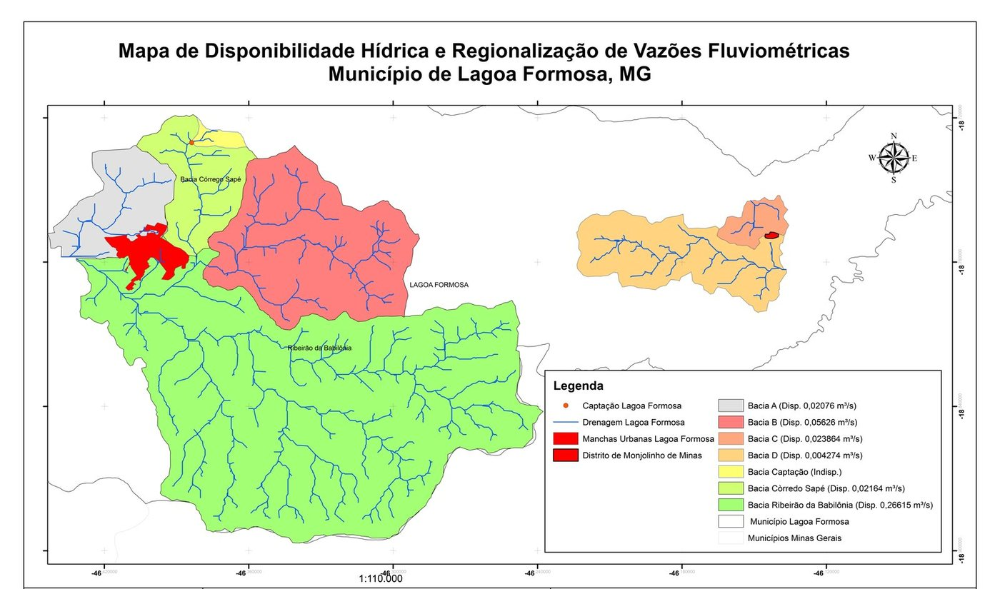
O plano de ação de emergência de uma barragem de mineração exige saber como a água se comporta a jusante: a forma do canal, a vegetação que freia o escoamento e a vazão de cada trecho. É isso que define até onde vai a mancha e quem está na zona de autossalvamento e na zona secundária. Em fevereiro de 2025, fiz esse trabalho para a barragem de rejeitos da Mina de Viga, em Congonhas/MG (Ferrous, hoje Vale), contratado pela HidroBR via Sintezis (Patos de Minas).
Comércio, serviços e estabelecimentos de saúde, como farmácias, clínicas e consultórios, precisam de plano de gerenciamento de resíduos para cumprir a legislação, e fazer um a um sai caro. Entidades que dão suporte às empresas, como a CDL e o Sindcomércio, podem oferecer isso em escala aos associados.
A ferramenta nasceu do diagnóstico hidrológico e de drenagem urbana que fiz pela GFX GEO para Lagoa Grande (MG). A ideia é transformar aquele trabalho artesanal em produto: entrar só com os insumos brutos de um município e obter o diagnóstico de forma automatizada.

Cada estudo hídrico começava do zero: baixar poços, outorgas, geologia, hidrografia e limites. A GeoBase nasceu da demanda de um estudo hidrogeológico, mas foi desenhada como ativo da empresa, organizada por tema e com um catálogo espacial por cima.
Diagnósticos hídricos, estudos de disponibilidade e análises de risco repetiam sempre o mesmo início: baixar bases, recortar, calcular. Escrevi um pacote Python parametrizado por município e classifiquei os 33 produtos do catálogo pelo quanto cada um pode ser automatizado.
Quem faz epidemiologia com dado do SUS esbarra num acervo que não é banco: arquivos compactados, particionados por estado e mês, sem chave de paciente e com convenções de nome cheias de armadilhas. Antes de baixar, ninguém sabe quanto vai custar.


2019 - 2022
Eurochem (Água e Terra Gestão Ambiental)
Prestação de serviço especializado (terceirizado)
Uma mineradora responde por qualquer parâmetro acima do limite legal. Em terrenos de geologia rica em metais, parte dessas concentrações é natural. O estudo de background mostra o que é da rocha e pode justificar valores de referência próprios para a área. Fiz esse trabalho para uma multinacional de fertilizantes, em um complexo de mineração de fosfato em Minas Gerais.
Uma multinacional de fertilizantes precisava cumprir condicionantes de licença e de outorga que pediam o monitoramento de vazões nos córregos do entorno de um complexo de mineração de fosfato em Minas Gerais. Coordenei o programa do primeiro estaqueamento ao relatório final.


2013 - 2023
Patos de Minas, MG
UNIPAM - Centro Universitário de Patos de Minas
Ensino superior e técnico
O UNIPAM, em Patos de Minas, é onde me formei engenheiro ambiental e sanitarista e onde trabalhei no laboratório antes de assumir turmas. A primeira disciplina foi Hidráulica Aplicada, na Agronomia, no primeiro semestre de 2015. Depois vieram Engenharia Civil, Arquitetura, Engenharia Química, Farmácia e outros cursos.
Entrei no LABGEO como estagiário, fui monitor de disciplinas de SIG, sensoriamento remoto e hidrologia e, de 2014 a 2018, agente de laboratório, atendendo também os laboratórios de Hidráulica e de Engenharia Química. Foi por ali que passou o estudo para o Ministério Público sobre pivôs centrais no Noroeste de Minas, pelo laboratório do UNIPAM.
Entre 2013 e 2020 publiquei e orientei trabalhos no UNIPAM, quase sempre com mapa ou com água no meio. O doutorado e o pedido de patente, em 2025, fecham a série. Os números abaixo vêm do currículo Lattes.
2018 - 2023
Comitê da Bacia Hidrográfica do Entorno da Represa de Três Marias (CBH SF4)
Regra de contagem: cada linha é uma frente e a contagem é mês a mês. Quando a fonte só traz o ano, a barra cobre o ano inteiro. A GFX GEO conta como uma frente contínua; os contratos de maior porte executados por ela têm linha própria. Os produtos de 2026 não contam à parte. Cliente privado aparece sem nome.
| Frente | Período | Fonte e observação |
|---|---|---|
| UNIPAM: laboratório e docência | jan/2013 a jul/2023 | LABGEO de 2013 a 2018; docência de jan/2015 a jul/2023 (Lattes) |
| GFX GEO, consultoria própria | jan/2015 a hoje | Desde 2015; primeira ART de consultoria hídrica em fev/2016 |
| MPMG: pivôs irregulares (pelo laboratório) | jan/2015 a dez/2016 | 2015 a 2016, período aproximado (currículo) |
| PMSB, Consórcio CISPAR: 5 municípios | fev/2016 a dez/2016 | Fev a dez/2016 (ART) |
| Mestrado, UFU | jan/2016 a ago/2018 | 2016 a ago/2018 (Lattes; repositório da UFU) |
| Comitê de Bacia SF4, conselheiro | ago/2018 a mar/2023 | Ago/2018 a mar/2023 (designação publicada em 09/08/2018) |
| Doutorado, UFU | mar/2019 a out/2025 | Ingresso em 20/03/2019; defesa em 20/10/2025 |
| Multinacional de fertilizantes: hidrometria e background | jun/2019 a dez/2020; jul/2021 a dez/2021 | Hidrometria de jun/2019 a dez/2020; background geoquímico de jul a dez/2021 (ARTs) |
| DNIT, pelo Consórcio STE-SIMEMP | jul/2022 a abr/2025 | 07/07/2022 a 01/05/2025 (ARTs CREA-DF) |
| Barragens de mineração: plano de emergência | jul/2024 a mar/2025 | Jul/2024 a mar/2025 (campanhas de campo) |
| PRF/DTIC | jan/2025 a hoje | Desde jan/2025 |
| CODEMGE: PELT-MG | mai/2025 a jan/2026 | Mai/2025 a jan/2026 |
| Produtos GFX GEO: PIAT, Bandit, DATASUS e outros | jan/2026 a hoje | 2026; fazem parte da frente GFX GEO e não contam à parte |
Doutorado e mestrado na UFU, o pedido de patente e oito anos de docência como prova de comunicação.
Pedido depositado em 16/09/2025, com a Universidade Federal de Uberlândia como titular. O título registrado é "Método de previsão de produtividade agrícola, através da seleção automática de variáveis climáticas oriundas de sensoriamento remoto". É um pedido depositado, não uma patente concedida, e o conteúdo técnico só se torna público quando o INPI publicar.
Pedido de patenteBR 10 2025 019783 9 (INPI, titular UFU), com o método da tese
A canola é uma oleaginosa de inverno usada para biodiesel, e faltavam estudos de aptidão no Brasil. Na dissertação cruzei clima e solo de uma mesorregião inteira de Minas Gerais, com ano base 2014 e estações automáticas do INMET em quatro estados, para dizer onde a cultura cabe.

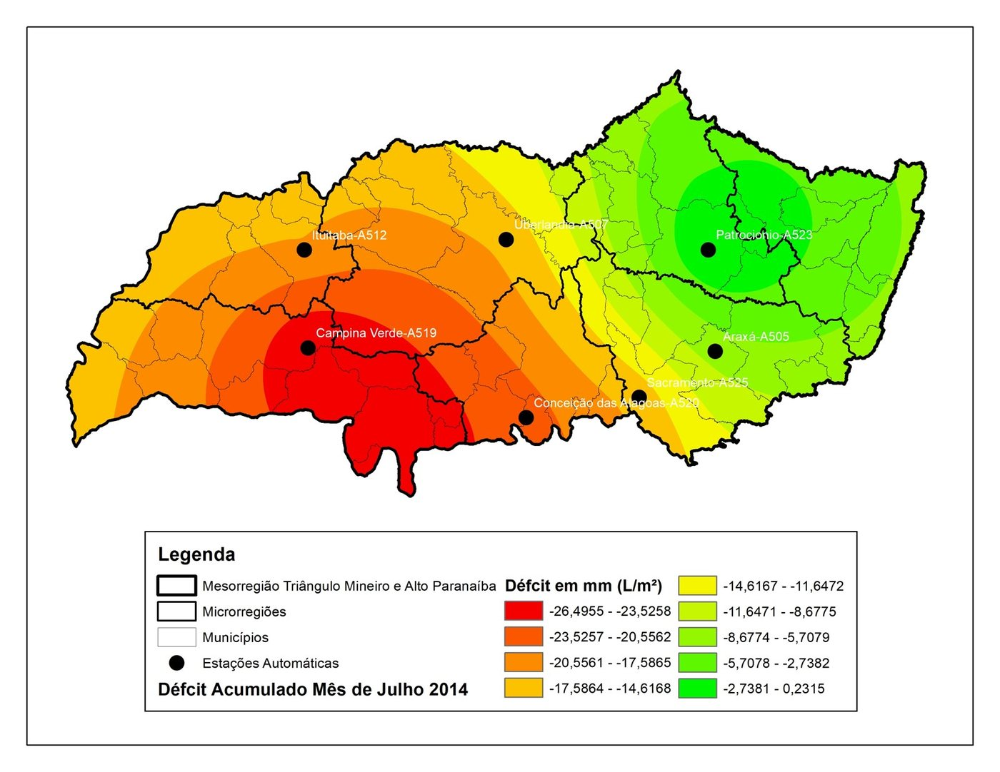


7 de 7níveis de compressão em que o seletor guiado venceu o estático no Qwen2.5-7B (perplexidade)
Ver certificações e cursos complementares
Especializações e cursos que complementam a formação, com os títulos originais.
Respondo rápido por e-mail e pelo LinkedIn. Se preferir, baixe o currículo e me chame depois.
Baixar CV (PDF, português)Download CV (PDF, English)LinkedIn